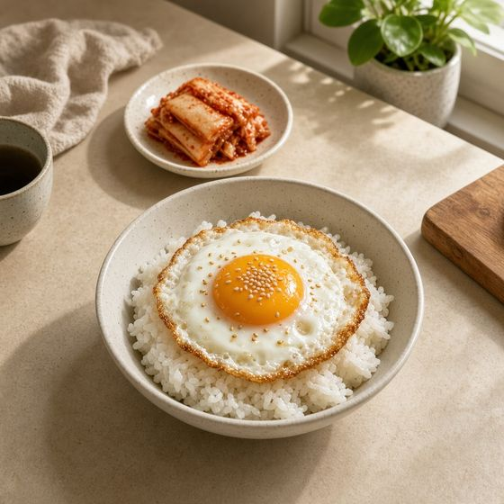
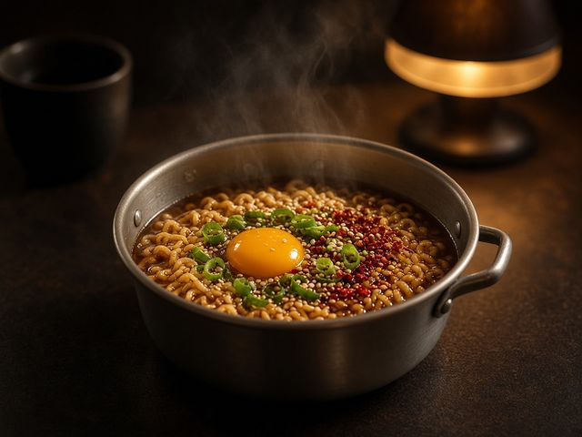
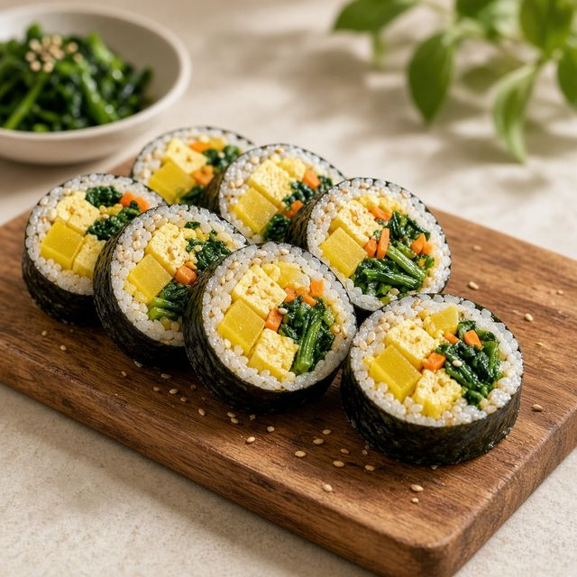

Babdoduk
오늘의 꽁밥
밥도둑 매거진
더보기
소식·이벤트
역사
맛집 지도
인스타그램
English
BABDODUK · KAIST FOOD
KAIST에서
오늘 뭐 먹지?
오늘의 꽁밥 보기
메뉴 고르기


학식
학식 메뉴 확인 중
학식 보기 →
꽁밥
꽁밥 일정 확인 중
꽁밥 보기 →
01
오늘 먹기
TODAY
오늘의 꽁밥
확인하러 가기
→

PICK
못 정했다면, 한 번 돌려 봐요
메뉴 고르기
→
MAP
↗
발로 찍은 맛집 지도
네이버 지도 열기
↗
(새 창에서 열림)
02
읽어보기
매거진 전체 보기 →
매거진 추천 글
매거진 데스크
01
요리 비법
02
요즘 먹방 유행
03
건강한 한 끼
04
식습관
점심이 남긴 자국
인스타그램에서 보기
↗
03
밥도둑 소식
밥도둑
Babdoduk
카이스트 기계과 먹방1티어 학생의 먹방일기
밥도둑이 걸어온 길
→
지금
공지·예정 활동
→
지난 활동
활동 기록 보기
→